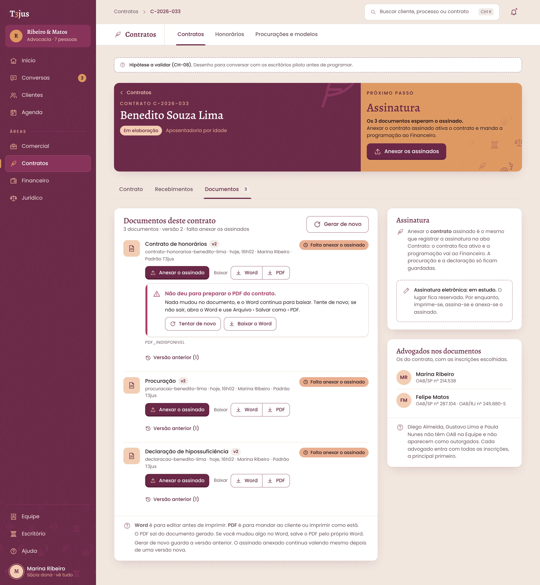

Contratos › ficha do contrato › aba Documentos
Contrato em Word e PDF
Pedido da Carol: “Dentro de contrato não tem a opção de baixar o PDF ou o doc”. Só mudam as ações de cada documento na aba Documentos aprovada (portal-procuracoes, decisões 18 e 20); o resto da tela é o aprovado. Clique numa imagem para abrir o HTML naquele estado. Leia as decisões e as perguntas em NOTAS.md.
1. Lista com os 3 documentos
Cada documento gerado tem “Anexar o assinado” e o grupo Baixar: Word e PDF, com o mesmo peso. O rodapé diz para que serve cada formato.
2. PDF sendo preparado
O botão PDF do contrato vira “Preparando o PDF” (aria-disabled, o foco fica nele) e uma linha de situação (role=status) diz que baixa sozinho. Word e os outros documentos seguem livres.
3. Erro ao gerar o PDF
Aviso preso ao documento (role=alert): o que aconteceu, o que continua igual (o Word baixa) e o que fazer: Tentar de novo ou salvar como PDF pelo Word. Código PDF_INDISPONIVEL.

4. Modelo próprio com tabela e imagem
O contrato vem do modelo do escritório. Um aviso curto diz que o PDF sai num leiaute simples no timbrado, com o mesmo texto, e que tabela e imagem ficam só no Word (pergunta 1).
5. Contrato assinado anexado
Contrato (PDF) e procuração (foto) assinados: a ação é “Baixar o assinado (PDF/foto)”. Word e PDF sem assinatura ficam numa lista que abre, para ninguém mandar o papel errado. A declaração ainda espera o assinado.